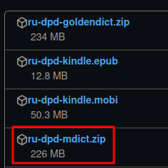

Установка DictTango на Android
Это поможет вам настроить и настроить DPD в приложении DictTango.
О DictTango
DictTango использует файлы MDict, но предлагает гораздо более удобный пользовательский опыт, чем само приложение MDict.
- Откройте любое слово из PDF или веб-сайта, удерживая его, и используйте всплывающее меню Android.
- После входа в приложение слова можно навигировать одним щелчком мыши.
- Он также предлагает полный текстовый поиск, а также множество других продвинутых функций.
Установка Вкратце
- Скачайте последнюю версию MDict DPD с Github
- Скачайте и установите DictTango из Google Play Store или APKPure
Подробные инструкции по установке
Ниже приведены подробные инструкции anupubba. Пожалуйста, следуйте им внимательно, чтобы получить полную функциональность DPD.
Скачать и установить DictTango
Скачайте и установите DictTango из Google Play Store или APKPure

Скачать DPD
Скачайте последнюю версию ru-dpd-mdict.zip с Github

Скопируйте файлы DPD в папку DictTango
Используя ваш файловый менеджер на выбор, распакуйте ru-dpd-mdict.zip.
Скопируйте три файла DPD в эту папку: /Android/data/cn.jimex.dict/files/Dictionaries
⚠️ Если у вас возникают проблемы с безопасностью и вы не можете получить доступ к этой папке, попробуйте скопировать файлы, используя компьютер.
Откройте приложение, чтобы настроить еще несколько параметров.
Добавить словари
Нажмите на Управление словарями.

Нажмите на кнопку Список словарей в правом верхнем углу.

Нажмите на Добавить локальные словари.

Выберите Папку словаря.

Выберите три флажка.

Нажмите кнопку Добавить локальные словари.

Теперь вы можете искать более миллиона измененных форм слов на пали.
Темный режим
Если вы предпочитаете темный режим, то
Нажмите кнопку меню в правом верхнем углу.

Нажмите на Настройки

И выберите предпочтительный для вас темный режим.

Приложение перезапустится в темном режиме.
Размер шрифта
Чтобы изменить размер шрифта, откройте любое слово в словаре.
Нажмите на эту иконку в нижнем правом углу.

Переместите ползунок вверх и вниз, чтобы изменить размер шрифта.

Как открыть слово в DictTango
Долгий клик на слове на пали в любом PDF, документе или веб-сайте.
Через мгновение появится меню Android.
Нажмите на DictTango.

Словарные статьи, связанные с измененной формой слова, будут отображены.

После входа в DictTango достаточно одиночным щелчком открыть любое слово.
Отображение всех записей
Чтобы увидеть все записи DPD, следуйте указанным ниже шагам. В противном случае вы увидите только первую запись.
Нажмите кнопку меню в правом верхнем углу.

Выберите Группа словарей.

Выберите Группу по умолчанию.

Выберите три флажка словарей DPD.

Нажмите ЕЩЕ в правом нижнем углу.

Нажмите на Автоматическое раскрытие.

Это все. Теперь вы увидите все записи, относящиеся к любой измененной форме слова на пали.
Изменение порядка словарей
Пока вы здесь, вы можете изменить порядок отображения словарей.
Переместите словари вверх и вниз, нажимая стрелки.

Наслаждайтесь чтением на пали с этим отличным приложением для Android!